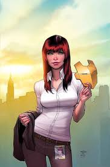
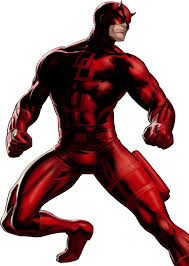

Aliados
-

Mary Jane Watson: Uma das principais aliadas e interesses amorosos de Peter Parker. Ela é uma mulher forte e independente que, apesar dos perigos, sempre oferece apoio incondicional.
-

Homem de Ferro: Tony Stark, mentor e amigo de Peter, ajuda a desenvolver suas habilidades e a entender a responsabilidade que vem com seus poderes.
-

Demolidor: Matt Murdock é um vigilante que compartilha uma conexão especial com Peter, lutando contra o crime em Nova Iorque.